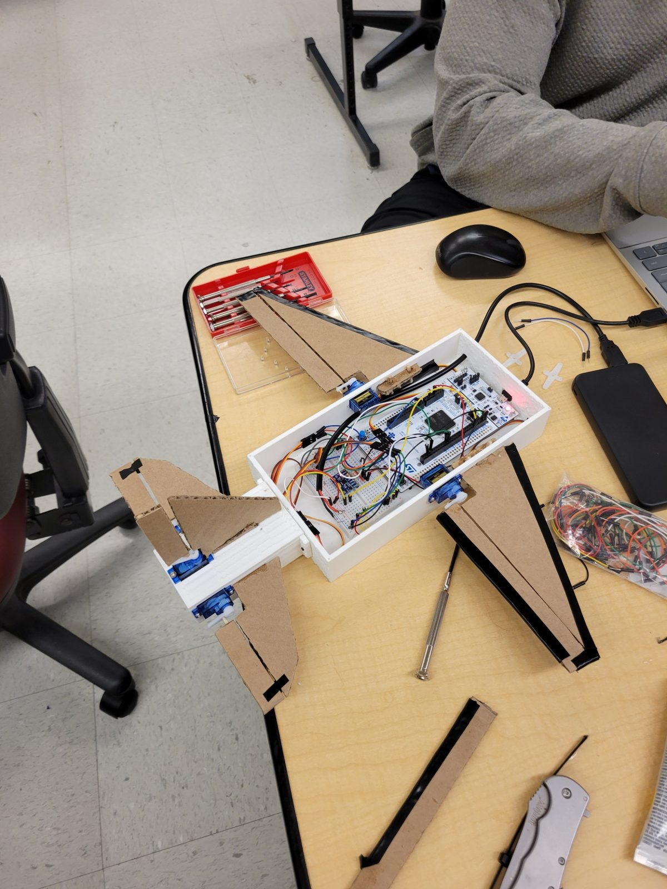
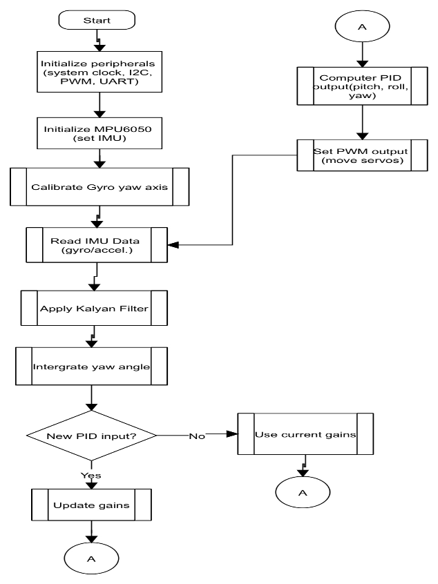
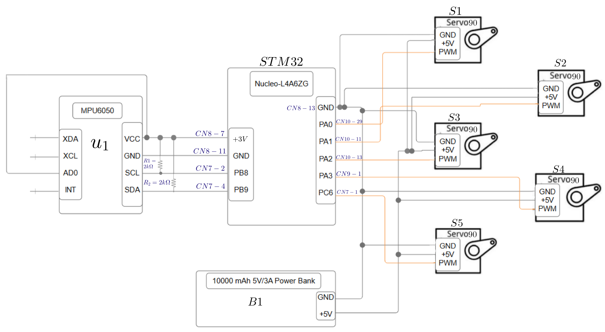

Embedded Controls · Bare-Metal STM32 · Sensor Fusion
SteadiFly — Three-Axis Flight Stabilizer
A bare-metal STM32 stabilizer that reads an IMU, estimates aircraft attitude through a Kalman filter, and drives control surfaces to counteract disturbances and hold level flight.
Specifications
The build, by the numbers.
The aircraft
Built to be flown at.


Software
A cyclic loop on bare metal.
No RTOS and no HAL — the control system runs as a continuous cyclic loop handling initialization, sensor acquisition, filtering, control computation, and actuator output in sequence.
The MPU6050 supplies three-axis gyroscope and accelerometer data over I2C at 1 kHz. That feeds a Kalman filter which estimates pitch, roll, and yaw; the estimates are smoothed for display and logged over UART at 115200 baud, where PuTTY and MATLAB were used to inspect the data during tuning. Independent control paths then drive the servos on each control surface to oppose the measured disturbance.


Demonstration
Holding level.
The stabilizer responding to disturbance. Silent — the audio track has been removed.